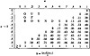

by Abraham Kandel
CRC Press, CRC Press LLC
ISBN: 084934297x Pub Date: 11/01/91
|
|
Fuzzy Expert Systems
by Abraham Kandel CRC Press, CRC Press LLC ISBN: 084934297x Pub Date: 11/01/91 |
| Previous | Table of Contents | Next |
It was noted earlier that implication relations may have a premise which consists of any combination of clauses conjuncted and disjuncted together. We require that they be fully parenthesized for clarity. A complex relation may look like the following:
THEN X4 is almost Y4
This relation is easy to read and requires no difficult translations. The relations may be added to the knowledge base simply by using a text editor, although a more sophisticated knowledge acquisition system is desirable.
Variables are represented by a percent sign (%) before the variable word. Clauses with variables in them are matched to all possible matches in the working memory. With consistency enforced across the premise clauses, this enables the system to infer several related items with the application of a single implication relation. Variables may also be in the conclusion of the implication relation and are given the value resulting from the premise matches. Variable use is implicit in the following discussion.
Fuzzy relations are a very flexible representation formalism which can be used to model any knowledge formalism. The frames that are used to contain the relations do not detract from this ability. One formalism was chosen for implementation and testing. One of the beauties of Fess is that the representation and inference formalisms could be changed without significant modifications, if any, to other parts of the system. Implication relations are used for inference chaining in the expert system. The implication relation consists of two main parts: a premise and a conclusion. The premise is made up of a number of clauses. Each clause in a premise looks like:
X is Y
where X and Y represent variable linguistic statements. Y may contain a fuzzy quantifier such as almost, very, etc. The premise consists of one to n clauses, with n < ∞. A typical clause is the following: the plant is almost green. The clauses are connected by the conjunction and disjunction operators . Any t-norm, t-conorm pair may be used.11
The conclusion is a set of one or more clauses connected by the linguistic connective and, which is used as a uniform conjunctive operator. That means that each clause in the conclusion holds with the same strength as the overall conclusion. Each relation is given, by the expert, some a priori strength which we call a certainty. This certainty may be represented linguistically with terms, such as usually, sometimes, or occasionally. It may also be represented with discrete numerical values in the rational-valued interval [0,1], into which the linguistic terms are currently translated.
We use a technique somewhat like generalized modus ponens11 to determine that a conclusion holds with some true value in the interval [0,1]. A conclusion that has a truth value of 0 is considered false, 0.5 as the midpoint is considered to indicate neither truth nor falsity, and 1 is considered to represent the crisp true. Intermediate values have varying degrees of truth and falsity. In the interval [.5,1], as the conclusion becomes more true its certainty approaches 1. Likewise, as the value of the conclusion certainty decreases in the interval [0,.5], the conclusion is seen as increasingly false.
We are interested in determining a method for operating akin to modus ponens, but in the context of fuzzy logic. Our problem may be stated in the following, letting cf denote the certainty of the relation, a denote the truth value of the premise, and b denote the truth value of the conclusion. We have an equation which looks like the following:
We have values for a and cf; we must find a value for b that is consistent with the ith fuzzy implication operator.19 There are many different implication operators which may be used in fuzzy implication relations. We choose an implication operator, the ith in this case, and calculate b our confidence in the conclusion. There are cases in which no value for b can be calculated. These have been referred to as out of bounds conditions by Bandler and Kohout.4 They are a practical problem that an expert system must be able to solve.

Figure 3 Modus ponens for the Kleene-Dienes-Lukasiewicz operator.
It was speculated that an out of bounds condition denoted some inconsistency or error within the expert system knowledge or operation. Toward this end records were kept of such occurrences in the initial prototype of Fess. An examination of some occurrences showed that this was not always the case.
In Figure 3, modus ponens for the Kleene-Dienes-Lukasiewicz implication operator is shown. For this operator, given an a priori certainty for a relation of 0.7 and a certainty in the premise which lies anywhere in the range [0,0.2], false to almost false, we find that we are indeed out of bounds. This possibility does not, intuitively, seem to be unreasonable. Clearly, if such cases can happen with some legitimacy, a methodology for dealing with them must be developed. We deal with the problem by ignoring the relation which causes the problem. This means when an out of bounds value is obtained for a conclusion in an implication relation Ri, the relation is left out of our inference chain. We will either establish the relative truth or falsity of the conclusion of Ri by other relations or will be obliged to find a reasoning path which does not make use of the conclusion contained within the offending relation.
| Previous | Table of Contents | Next |
){kind=link}